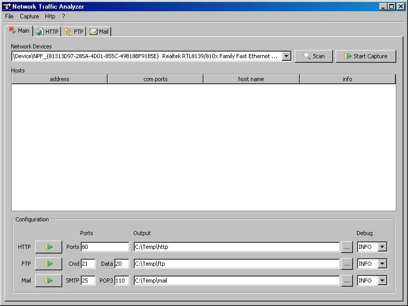
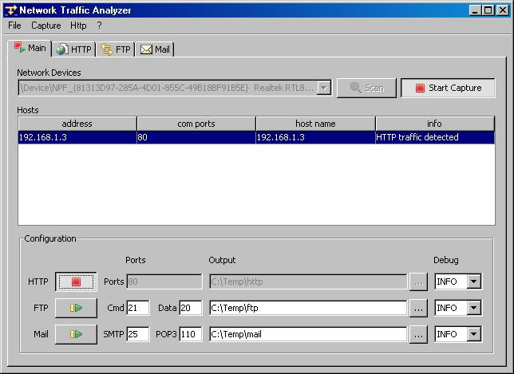
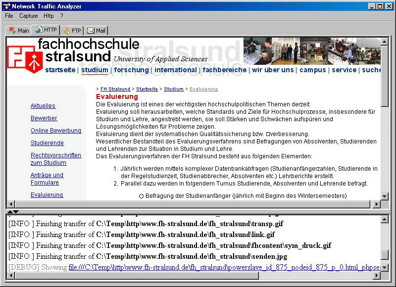
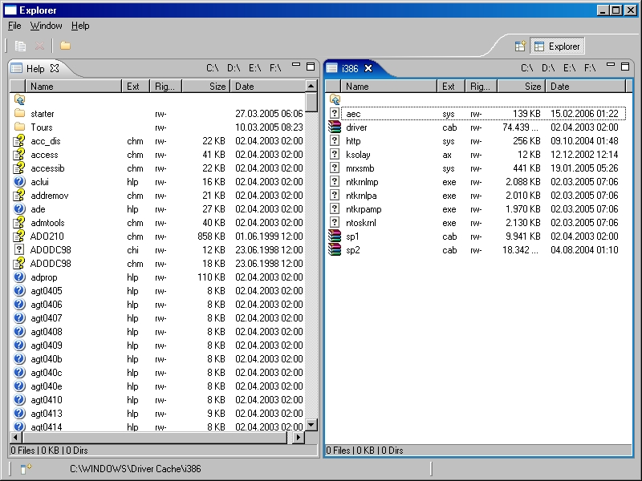

Moin
Ich bin Software-Entwickler und arbeite in einem Unternehmen in der Nähe von Rostock. In den Anfängen meiner Karriere konzentrierte ich mich auf die Programmiersprache Java sowie die modellgetriebene Entwicklung. Heute bin ich Fullstack-Entwickler mit Schwerpunkt auf der Programmiersprache Go.
Der Fokus meiner Tätigkeit liegt auf der Entwicklung einer Plattform zur Provisionierung von Softwarelösungen für die Versorgungsbranche. Diese Plattform standardisiert alle Prozesse rund um die Installation, Aktualisierung, Authentifizierung, Schnittstellen sowie Wartung und Pflege.
Immer wieder stelle ich fest: „Das habe ich doch irgendwann schon einmal gemacht.” Diese Gedanken motivieren mich, meine bisherigen Erfahrungen zu sammeln und festzuhalten. Da viele Projekte aus beruflichen Stationen oder dem Studium stammen, sind sie nur grob skizziert.
Projekte
github.com/rheilek
Hier sind meine öffentlichen Projekte zu finden.
2025
Agent - BDEW und BSI-Konformität
Eine neue Richtlinie in der Versorgungsbranche erfordert die Kommunikation verschiedener Betriebe über das WAN (Internet) mit Client-Zertifikaten.
Umsetzung der Security- und Key-Lifecycle-Policy. SNI-Routing und HAProxy als DMZ.
golang | haproxy
2023
Agent - Passwort-Manager für die Datenbank
Um sensible Daten aus der Datenbank in einen Passwort-Manager zu migrieren, wurde eine Echtzeitkommunikation zwischen Datenbank und Middleware entwickelt.
Der Datenbankcode kann über diese Kommunikation direkt Passwörter aus dem Passwort-Manager der Middleware abfragen, um diese zur Verschlüsselung/Entschlüsselung oder Signierung/Verifizierung zu nutzen.
golang | go-ora
2023
Migration von Oracle Forms/Reports
Migration einer bestehenden Applikation auf eine neuere Oracle-Version.
Rund 4000 Artefakte mussten neu kompiliert werden. Dafür wurden Installationsroutinen und Kompilierungswerkzeuge erstellt.
gosec | go staticcheck | govulncheck | java-semgrep | owasp-dependency-check
2021
Agent - DAST und SAST
CI/CD-Prozesse zum zyklischen Testen und Dokumentieren der Anwendungssicherheit.
Neben der statischen Code-Analyse inkl. Abhängigkeitenanalyse, lag der Fokus auf die HTTP-APIs (REST und SOAP) sowie die Authentifizierung.
gosec | go staticcheck | govulncheck | java-semgrep | owasp-dependency-check
2021
Agent - Dynamische Benutzer und Passwörter
Umsetzung des Prinzips der geringsten Rechte durch temporäres Generieren von Service-Accounts.
Die Service-Accounts erhalten minimale Rechte, generierte Passwörter und dazu die Option zur Rollierung.
java | golang
2021
Agent - Passwort-Manager
Sichere Passwortverwaltung und Authentifizierung inspiriert von HashiCorp Vault.
Einführung eines Master-Passwortes. Sichere Aufbewahrung von sensiblen Daten durch Verschlüsselung mittels Data-Encryption-Key (DEK) und Key-Encryption-Key (KEK). Generierung von Client-Zertifikaten für den sicheren Remote-Zugriff auf einzelne Buckets des Passwort-Managers.
java | golang
2019
Agent - Dokumentation und Schulungsumgebung
Erstellen einer TeX-Dokumentation und Docker-Umgebung zur Schulung von Administratoren.
Docker Multi-Stage-Build um unterschiedliche Zustände in der Schulungsumgebung automatisiert erstellen zu können. Eigenes Docker-Netzwerk je Cluster mit Bridge zum Host.
tex | docker | docker-compose
2019
Agent - Signierung und Packages
Signierung der Binaries. Unter Linux Auslieferung und Aktualisierung mittels Packages.
CI/CD-Prozess zum Signieren und Erzeugen von RPM-Paketen.
makefile | rpmbuild
2018
Agent - Reverse-Invocation
Eine DMZ hat im Idealfall keinerlei Möglichkeit, eine Verbindung in das interne/lokale Netz aufzubauen. Um dennoch Daten und Services des internen/lokalen Netzes freizugeben, wurde das Modul Reverse-Invocation entwickelt.
Der Mechanismus basiert auf einer langlaufenden Verbindung, die vom internen Netz erstellt wird. Die Weiterleitung aus der DMZ ins interne Netz erfolgt dann auf dieser Verbindung mittels Multiplexing. Angreifern ist es daher nicht möglich, neue Verbindungen zu erstellen sowie das Multiplexing-Protokoll nachzubilden.
golang
2017
Agent - OAuth2/OIDC
Der Agent als HTTP-Kommunikationszentrale wurde um OAuth2 zur Autorisierung und OpenID Connect zur Authentifizierung erweitert.
golang
2017
Agent - Gossip und Monitoring
Clusterweites Monitoring und Visualisierung der Daten mittels D3-Charts.
Der Agent übernimmt die "nervigen" Standardroutinen und dient gleichzeitig als Ein- und Austrittspunkt jeglicher HTTP-Verbindungen.
golang | d3.js | gossip (based on apache cassandra protocol)
2015
Agent - Virtueller Administrator
Automatisierte Installation, Aktualisierung und Monitoring von Systemen zum Betrieb einer Softwarelösung für die Versorgungsbranche.
Der Agent übernimmt die "nervigen" Standardroutinen und dient gleichzeitig als Ein- und Austrittspunkt jeglicher HTTP-Verbindungen.
golang | java | html | js | css
2014
JEE Architektur für PL/SQL Applikation
Konzept und PoC (Proof of Concept) einer JEE-Architektur zur sanften Migration einer bestehenden Oracle Forms/Reports Applikation mit einem hohen Maß an PL/SQL-Geschäftslogik in der Datenbank.
Das primäre Ziel ist die Neugestaltung der Benutzeroberfläche. Weiterhin besteht der Wunsch neue oder geänderte Geschäftslogik in die Middleware zu verlagern.
java ee | websockets | json | pl/sql
2014
Middleware-Installer und -Cloning
Bereitstellung von Werkzeugen zur kundenorientierten Installation und Cloning einer komplexen Middleware-Infrastruktur.
Erstellen und Konfigurieren von DataSources, SecurityProvider, Deployments und weiteren applikationsspezifischen Voraussetzungen.
java | python
2012
Modellgetriebene Entwicklungsumgebung
Entwicklungsumgebung zur Modellierung und Generierung von komplexen Software-Systemen (ERP).
Bestehend aus einem Basis-Framework, verschiedenen Modell-Editoren und Generatoren zur Erzeugung des Infrastrukturcodes. Die primären Ziele sind die Steigerung der Entwicklungseffizienz und der langjährige Investitionsschutz durch plattformunabhängige Modelle.
java | eclipse | osgi | xtext | gmf | riena | hibernate | spring
2011
Applet-Integration
Integration eines bestehenden Java Applets in eine Java Fat-Client Anwendung.
Simulation der Applet-Umgebung und Bereitstellung separater Kontexte zur Ereignisverarbeitung je Instanz.
java | applet | swt | swing | awt
2009
Workflow-Engine
Interpretierung von Workflowmodellen und Steuerung der angezeigten Views einer Riena-Applikation (RCP).
Zur Visualisierung des aktuellen Workflows wird die Position des Benutzers in einem Train dargestellt.
java | eclipse | osgi | riena | emf
2009
Master-Thesis
Entwicklung eines Konzepts zur Rücktransformation plattformspezifischer Modelle zu plattformunabhängigen Modellen am Beispiel einer Geschäftsanwendung.
Das primäre Ziel dieser Arbeit war die Entwicklung einer Methodologie und prototypische Umsetzung, um Modelle aus Refactoring-Prozessen zu plattformunabhängigen Modellen zu transformieren. Demzufolge wurde eine Umkehrung der bekannten Vorwärtstransformation aus der modellgetriebenen Software-Entwicklung (z. B. MDA) gesucht, die zur Software-Modernisierung eingesetzt werden soll. Im Hauptteil der Arbeit werden bestehende Ansätze evaluiert und ein Konzept abgeleitet, welches im Anschluss mithilfe eines praktischen Beispiels geprüft wird.
java | eclipse | openArchitectureWare
2008
MobileSOA
Zugriff auf eine SOA-Infrastruktur über ein mobiles Endgerät.
Dabei wurden die Verfahren REST und SOAP implementiert. Zusätzlich wurde die Übertragung per HTTPS verschlüsselt.
java me | wtk | glassfish
2008
Network Traffic Analyzer
Sniffer und Capture Tool zum Aufzeichnen von HTML-, FTP- und Mail-Verkehr von einer Netzwerkschnittstelle (Studienarbeit).
  
java | jpcap
2007
Bachelor-Thesis
Entwurf und Implementierung eines grafischen Editors zur Modellierung datenbankgestützter Softwareartefakte.
Das Ziel war die Eigenentwicklung eines grafischen Entity-Relationship-Modellierungs- und -Generierungswerkzeugs zur Ablösung eines veralteten Editors.
java | eclipse | gmf | emf
2007
File-Explorer
Einfacher Dateimanager nach dem Vorbild vom Norton, Total oder Gnome Commander mit dem Versuch die Zeit von Dateioperationen exakt zu bestimmen.

java | eclipse rcp
Kontakt
Angaben gemäß § 5 TMG
Ra[0x6C,0x66] Heil[0x65,0x6B]
F[0x65,0x6C]dstr[0x2E] 48
18[0x30]57 Rostock
contact [0x40] seraheil [0x2E] de
Haftung für Inhalte: Die Inhalte wurden mit größter Sorgfalt erstellt. Für die Richtigkeit, Vollständigkeit und Aktualität der Inhalte können wir jedoch keine Gewähr übernehmen.
Haftung für Links: Unser Angebot enthält Links zu externen Webseiten Dritter, auf deren Inhalte wir keinen Einfluss haben. Für die Inhalte der verlinkten Seiten ist stets der jeweilige Anbieter oder Betreiber der Seiten verantwortlich.
Zum Schutz sind ausgewählte Zeichen hexadezimal dargestellt.